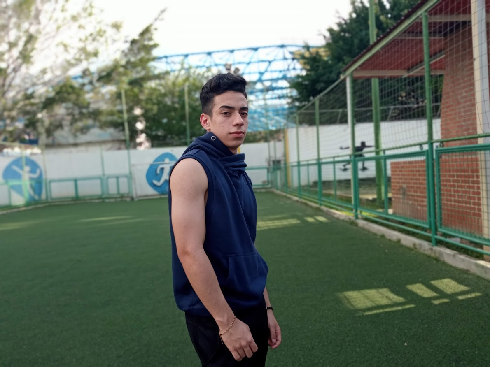
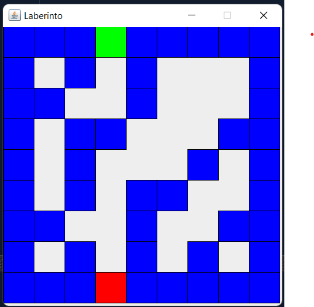
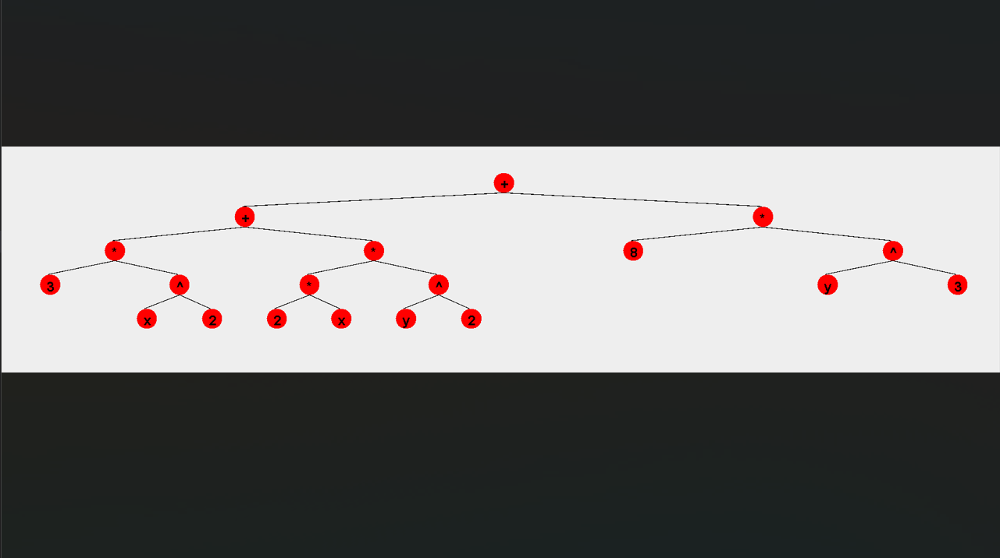
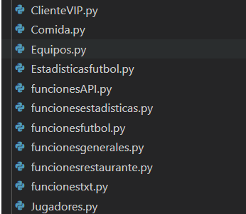

Carrusel
Sobre mi
Experiencia
Habilidades
Contáctame
Luis Pernía
Mi primera página web
Sobre mi

Soy venezolano, residente del Distrito Capital, específicamente en el Municipio El Hatillo. Además, estudiante de Ingeniería de Sistemas de la Universidad Metropolitana, graduado de bachiller en el Instituto Arturo Michelena. Tengo 18 años de edad y nací el 2 de octubre del 2002.
Perfil e intereses
Me considero creativo, proactivo e interesado en seguir aprendiendo. Me gusta mucho la actividad fisica, salir con mis amigos y pasar tiempo con mi familia. Me considero una persona integra con deseos de superación y me gusta trabajar en equipo.
Objetivos a corto plazo
Mi objetivo actual es graduarme de la universidad y volverme competente como ingeniero de sistemas.
Objetivos a largo plazo
Mis objetivos futuros son crear y gestionar negocios relacionados con tecnología, tener un estilo de vida saludable y seguir formandome.
Experiencia
Proyecto Laberinto
Este es un proyecto desarrollado en java en noviembre del 2022.
link

Proyecto Arboles
Este es un proyecto desarrollado en java en diciembre del 2022.
link

Proyecto SamanFifa
Este es un proyecto desarrollado en python en mayo del 2022.
link
